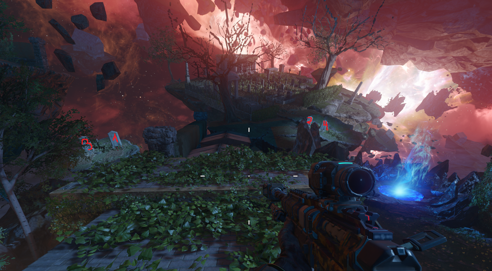
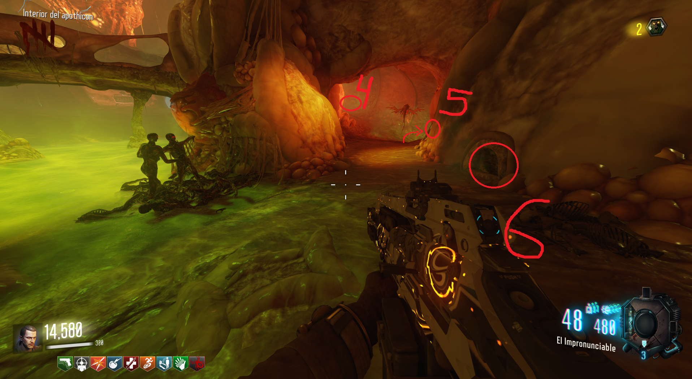
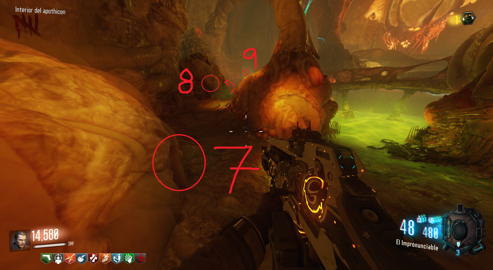
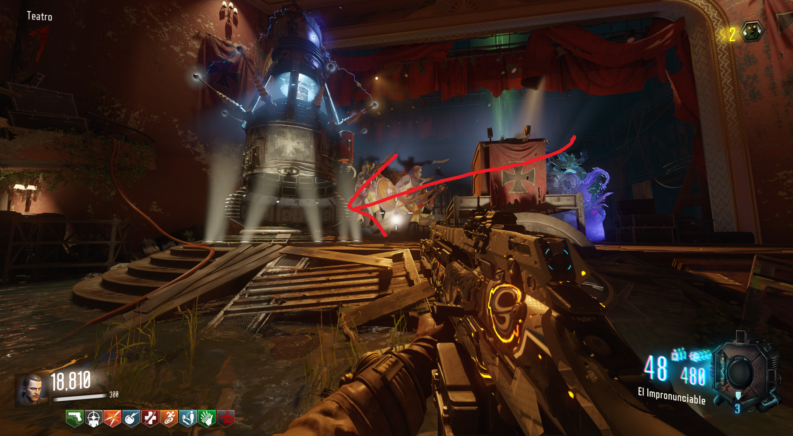
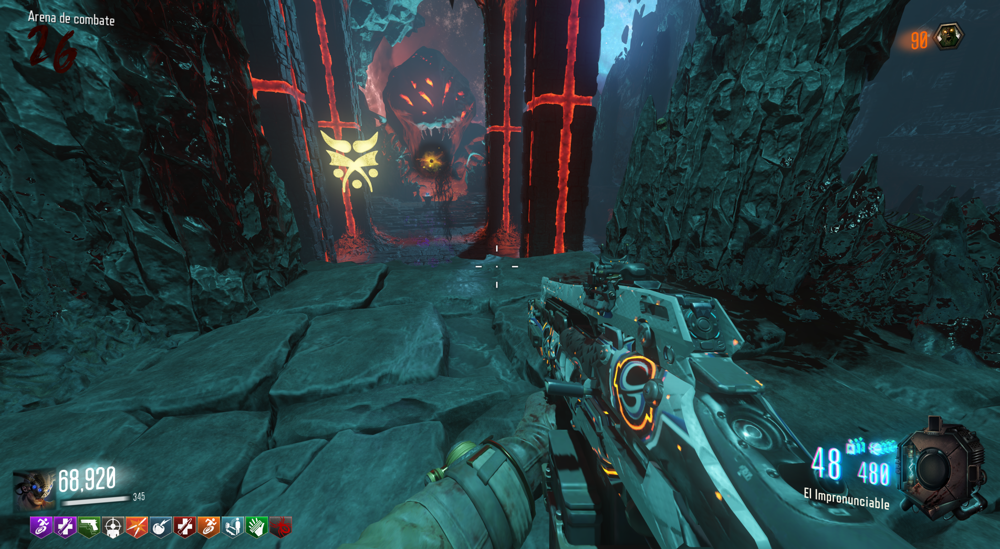

Requisitos: Tener todos los EE anteriores, tener el Apothicon mejorado, un arma mejorada y Lil'Arnies.
Primera Cinta:
El primer paso será disparar en el orden de la imagen a las tumbas que se pueden ver en el Spawn.

Si se iluminan y un sonido de confirmación suena lo hemos hecho correctamente.
Lo siguiente será buscar una piedra triangular en una lanzadera. Puede ser en la de Verrückt a Kino, en la de Shangri-La al Spawn o en la de Verrückt a Mob of the Dead.
Cuando la encontremos, construiremos al Keeper cerca y lo llamaremos.
Iremos hasta la lanzadera donde está la piedra triangular y empezará a hacer un ritual (Recomiendo saltar por la lanzadera y volver a caer en ella para atraerlo a la piedra).
Deberemos de protegerlo de los zombies durante 2 min y medio.
Cuando termine nos dará la primera cinta
Iremos a Nacht der Untoten y la colocaremos en el reproductor.
Segunda Cinta:
Entraremos al Apothicon y es aquí es donde necesitaremos tener los Lil'Arnies.
Tendremos que lanzarlos a los 9 agujeros sin equivocarnos.
Cada vez que lanzemos 3, aparecerán Margwas, que con suerte, nos darán Munición Máxima para seguir con los agujeros.
Este es el mejor orden para no confundirnos:


Cuando completemos los agujeros, la cinta aparecerá en el puente de arriba.
En ese momento iremos a Kino der Toten y pondremos la cinta en el reproductor.
Tercera Cinta:
En este punto tendremos que equiparnos el Apothicon MEJORADO, y un arma también mejorada.
Ahora tendremos que disparar a 6 piedras con el arma mejorada. De cada una de estas piedras, saldrá un hueso y lo tendremos que absorber con el Apothicon MEJORADO.
En el Spawn
En Shangri-La
En Der Eisendrachen: Haciendo el parkour sin gravedad.
En Nacht der Untoten

En Verrückt
En Origins
Si lo hicimos correctamente, en Nacht der Untoten aparecerán todos los huesos. Dispararemos con el Apothicon a los huesos y luego otro disparo al cadáver que aparecerá.
Una vez se vaya el cadáver, la cinta aparecerá.
En lo alto del Origins encontraremos su reproductor.
Sophie:
Completadas las cintas, Sophie aparecerá en Nacht y tendremos que cargarla con las cuatro torretas del mapa.
Tendremos que apuntar a las piedras azules con las torretas, que nos costarán 2000 puntos cada una.
Spawn
Der Eisendrachen
Verrückt
Mob of the Dead
Cuando Sophie esté roja, interactuaremos con ella y la seguiremos.
Huevos:
Iremos a Kino der Toten y accionaremos el teleporter (todos los jugadores deberán de estar en el interior).

Encima de la cama podremos obtener el libro.
Al volver a Kino, pondremos el libro en la mesa del escenario y 4 huevos saldrán de manera aleatoria por el mapa.
Tendremos que llevarlos de 1 en 1 al interior del Apothicon y colocarlos en las bolsas del centro para luego cargarlos matando zombies.
Todas las localizaciones de los huevos:
Recorreremos toda la zona en busca de un pitido (como un sónar). Si tenemos un control o mando, se pondrá a vibrar cuando estemos cerca.
Si el sonido es muy intenso, interactuaremos con el aire y el gusano nos mostrará el símbolo.
Lo obtendremos e iremos a buscar otro símbolo con otro gusano en un portal diferente.
Una vez tengamos los 4 símbolos iremos a la zona del proyector de Kino der Toten y al situarnos todos los jugadores en los símbolos, seremos teletransportados a la primera Boss Fight.
Priemra Boss Fight:
Cuando lleguemos al lugar, deberemos interactuar con el libro y memorizar el orden de los símbolos. Herramienta para recordan el orden:
 Iremos a la zona alta del lado contrario y tendremos que interactuar con los símbolos en el orden que vimos.
Iremos a la zona alta del lado contrario y tendremos que interactuar con los símbolos en el orden que vimos.
 Si lo hacemos correctamente, comenzaran 4 fases aleatorias en las que tendremos que matar a 2 Margwas en cada una.
Cuando acabemos con los últimos Margwas, la llave de invocación aparecerá en el medio para obtenerla.
Lanzar llave:
Al volver tendremos que lanzar la llave contra 7 objetos. Lo mejor será dejar a un solo zombie para hacer este paso tranquilo.

Hecho esto, la llave desaparecerá, y podremos volver al teleporter para la batalla final.
Boss Fight Final:
Al volver Shadowman tendrá un escudo que tendremos que romper. Para conseguirlo, colocaremos la llave en un pedestal y la cargaremos con almas.
Una vez este cargada la llave, se la lanzaremos a Sophie.
Sophie romperá el escudo y tendremos que disparar a Shadowman hasta que se encuentre dentro de la boca del Apoticón, ahí interactuaremos con el libro para atraparlo.

Si fallamos, repetiremos el proceso del pedestal otra vez.
Al lograr esto, el habremos terminado el Easter Egg de Revelations.